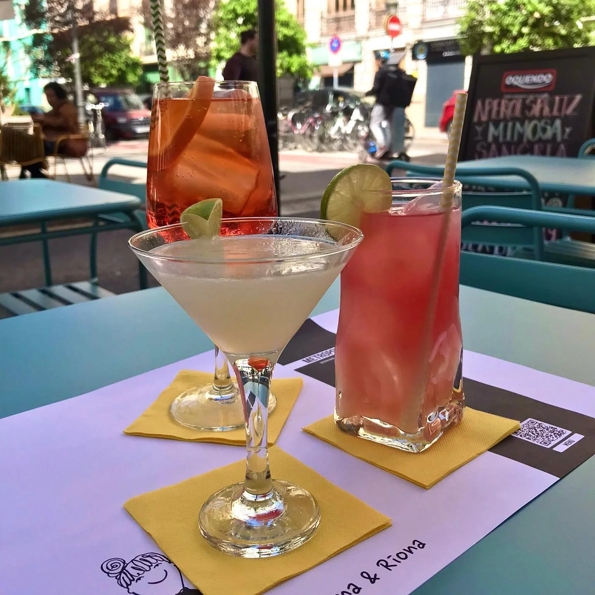
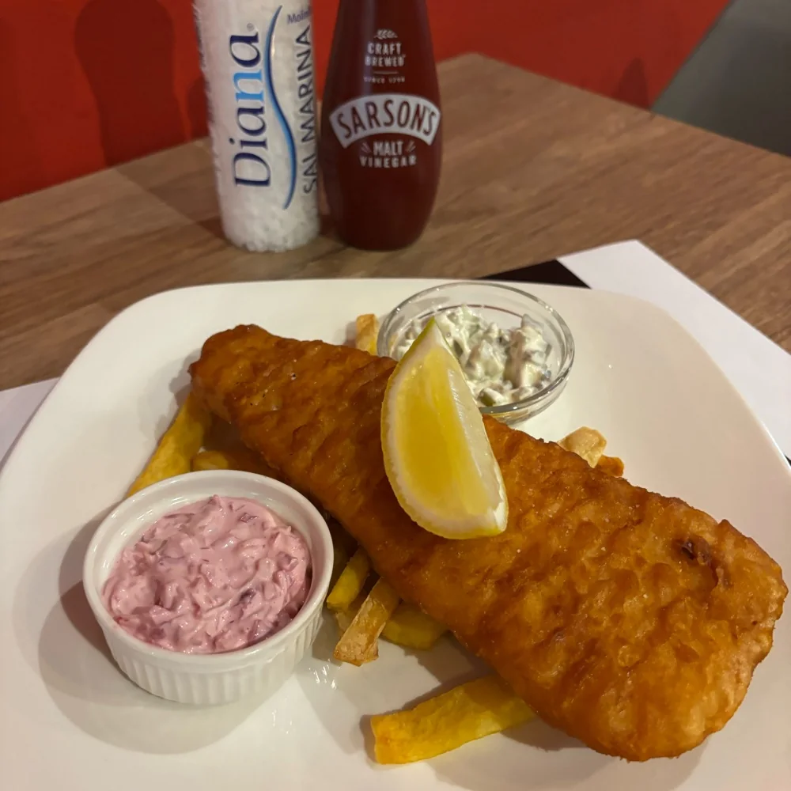
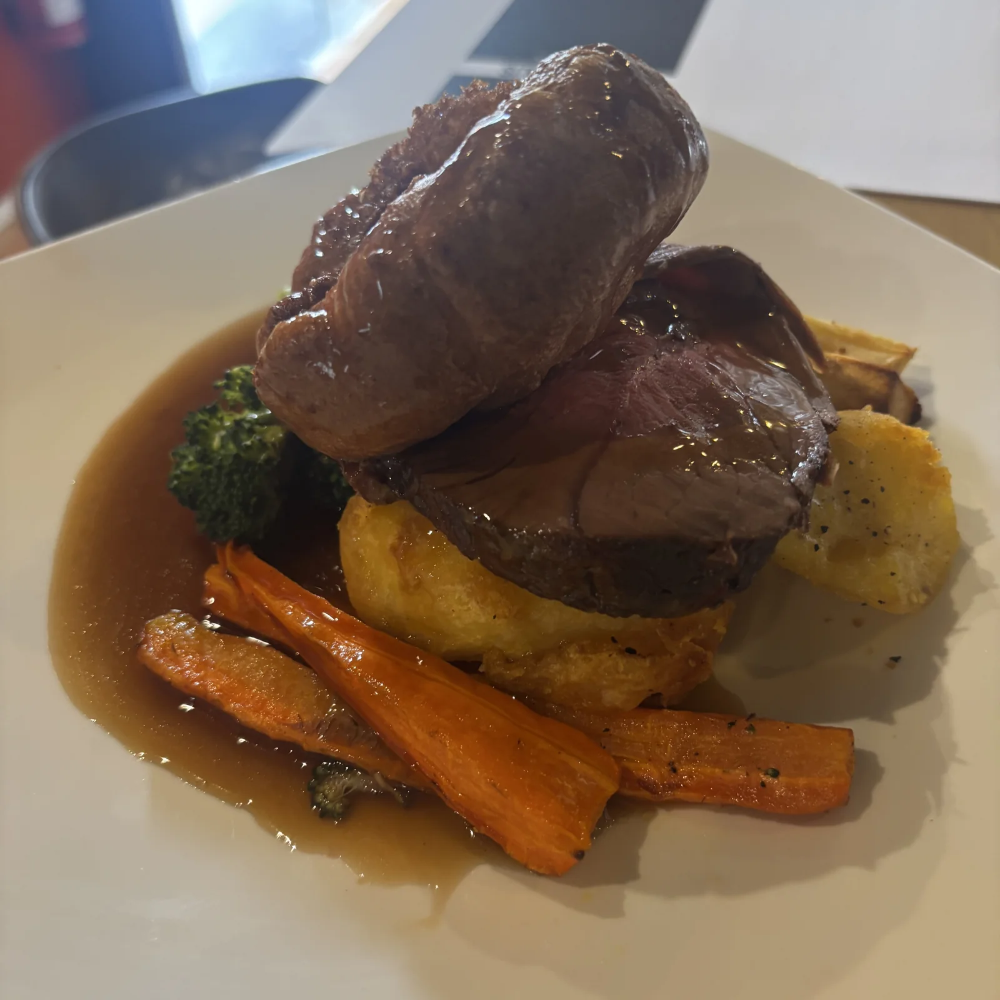
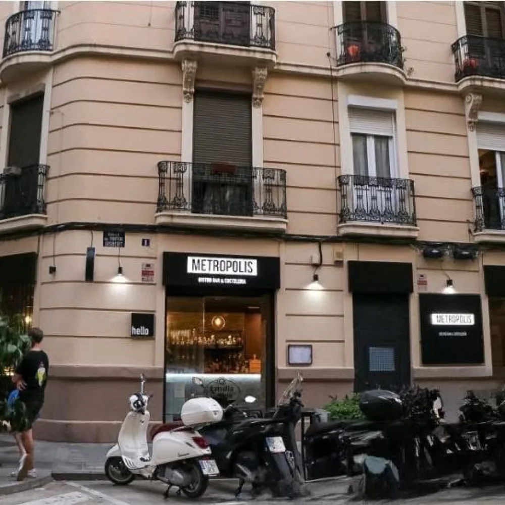

Irish kitchen
Fish & chips, steak & Guinness pie y otras propuestas de la carta publicada. Consulta disponibilidad y alérgenos con el local.
Cuba, 48 · Ruzafa
Cocina de inspiración irlandesa, cerveza y cócteles. La propuesta de Metropolis, en la calle Cuba.

Un lugar con identidad
Metropolis reúne cocina y bar en Ruzafa. Su carta publicada combina clásicos irlandeses, platos para compartir y cócteles, con propuestas como fish & chips y Sunday Roast.
Antes de organizar tu visita, consulta la disponibilidad directamente con el establecimiento. La carta y la programación se publican en sus canales.
Los canales del local ↗A tu manera
Irish Bar & Kitchen. Cuba, 48 · Ruzafa.
Fish & chips, steak & Guinness pie y otras propuestas de la carta publicada. Consulta disponibilidad y alérgenos con el local.
De la selección de cócteles a la cerveza de barril: la barra acompaña la propuesta de cocina.
Sunday Roast, quiz y game nights forman parte de su comunicación. Confirma las próximas fechas directamente.
Una mirada al lugar
Imágenes reales publicadas en la web y el Linktree de Metropolis. No garantizan disponibilidad o apertura actuales.



Todo a mano
Consulta la información publicada por el establecimiento en sus canales.
Nos vemos aquí
Consulta disponibilidad y próximos servicios en el WhatsApp enlazado por el propio establecimiento.
Consultar disponibilidadConsulta apertura y disponibilidad directamente antes de venir.